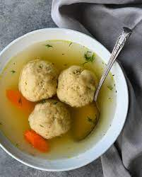

Oane of the Pesach flavors
Is like a soup but is different than soup
Ingredients
- 2 eggs slightly beaten
- 2 tablespoons oil or chicken fat
- 2 tablespoons soup stock or water
- 1/2 cup matzah meal
- 1 teaspoon salt
How to The Steps
-
Beat eggs slightly with fork. Add other ingredients, except matzah
meal, and mix. Add matzah meal gradually until thick. Stir.
Refrigerate for 20 minutes in covered bowl.
-
Wet hands and form into balls. Drop into bubbling chicken soup or into
a large wide pot into which 1 quart water seasoned with 1 tablespoon
salt has been added and has come to a boil. Cook for 30 minutes.
Yields 4 balls per each 1/4 cup of matzah meal.
Back to the Main Page.